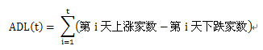

腾落指数(A D Line)，是以股票每天上涨或下跌之家数作为计算与观察的对象，以了解股票市人气的盛衰，探测大势内在的动量是强势还是弱势，用以研判股市未来动向的技术性指标。
将每天收盘价上涨股票家数减去收盘价下跌的股票家数(无涨跌不计)后累积值  起始日期为ADL(1)，目前日期为ADL(t)。
腾落指数与股价指数比较类似，两者均为反映大势的动向与趋势，不对个股的涨跌提供讯号，但由于股价指数在一定情况下受制于权值大的股只，当这些股只发生暴涨与暴跌时，股价指数有可能反应过度，从而给投资者提供不实的信息，腾落指数则可以弥补这一类一缺点。
由于腾落指数与股价指数的关系比较密切，观图时应将两者联系起来共同石头。一般情况下，股价指数上和或，腾落指数亦上升，或两者皆跌，则可以对升势或跌势进行确认。如若股价指数大动而腾落指数横行，或两者反方面波动，不可互相印证，说明大势不稳，不可贸然入市。
具体来说有以下六种情况。
(1)股价指数持续上涨，腾落指数亦上升，股价可能仍将继续上升。
(2)股价指数持续下跌，腾落指数亦下降，股价可能仍将继续下跌。
(3)股价指数上涨，而腾落指数下降，股价可能回跌。
(4)股价指数下跌，而腾落指数上升，股价可能回升。
(5)股市处于多头市场时，腾落指数呈上升趋势，其间如果突然出现急速下跌现象，接着又立即扭头向上，创下新高点，则表示引情可能再创新高。
(6)股市处于空头市场时，ADL呈现下降趋势，其间如果突然出现上升现象，接着又回头，下跌突破原先所创低点，则表示另一段新的下跌趋势产生。
为什么股价指数与腾落指数有以下关系呢？因为指数是以股价和股本来策样加以计算的，这样使得高股价与大股本额股票(一般为主流股，升跌在指数运算中所占比例重大，而腾落指数把每种股票都作为股市一个分子，两者的结合分析，可以看出股市的走势。一般来说，若是多头走势里，维持上升走势一定要有重心，重心即所谓的主流股，当主流股大涨小回以维持中长线的长打实户信心，而其余股票则采取轮涨的步调上扬时，上升的步伐将是十分稳定的。如果在Ｋ线上升而ADL下降，就是提醒您大盘的上升气势已有偏于某一族群的味道，而涨势不均匀并非是件好事，通常在连续这种背离现象时，都是大势回档的预兆。反之，在空头的行情里，虽然Ｋ线仍然收黑，但ADL已翻上，代表了多头主力企图以点的攻击增强对面的扩张，既然大多数的股票回升了，大盘的止跌也应该不远了。
ADL走势与指数走势多数有类似效果；因而也可用趋势线和型态研判。